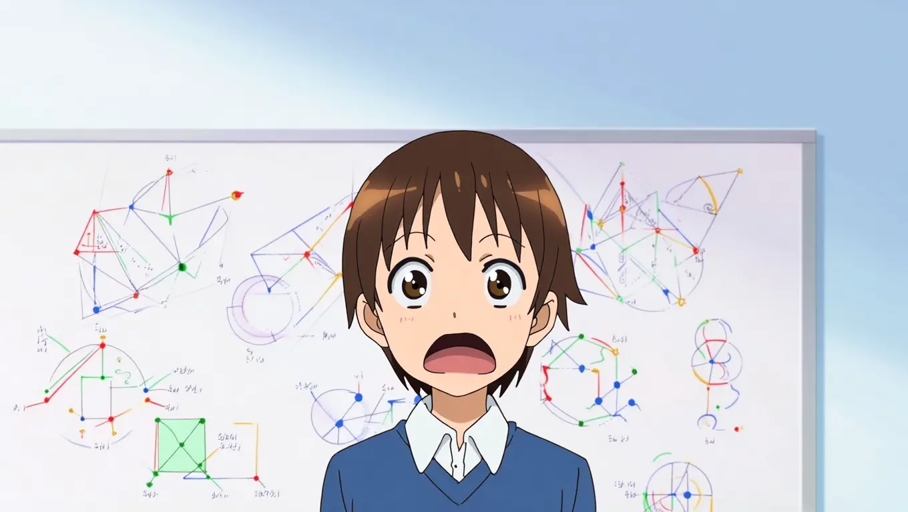
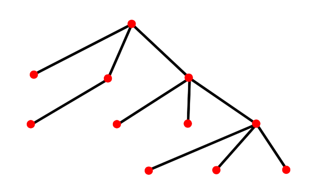
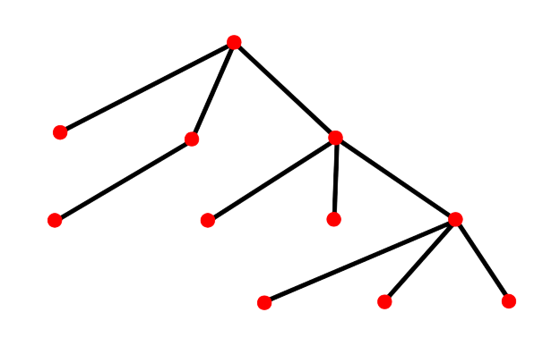
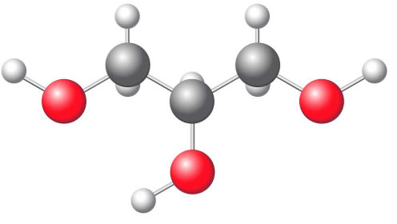
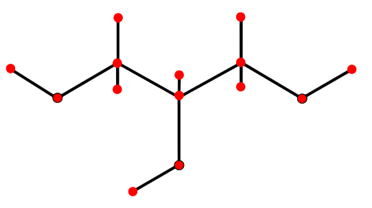
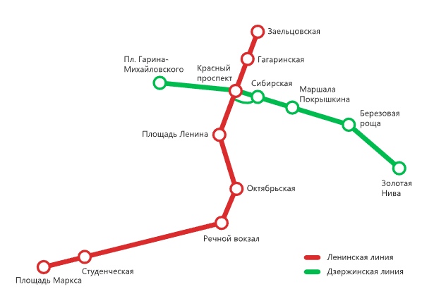
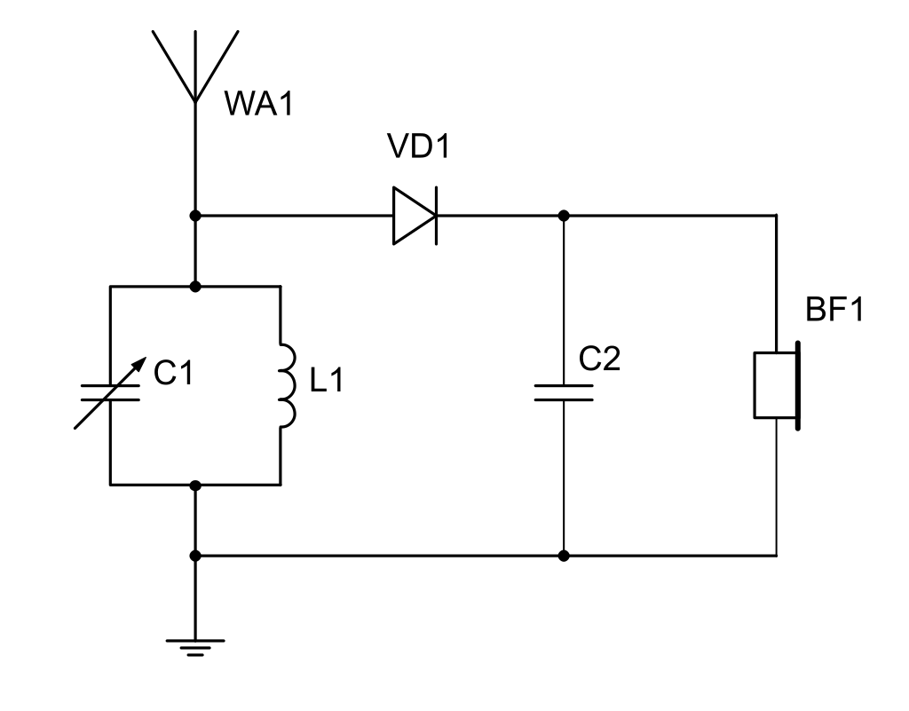
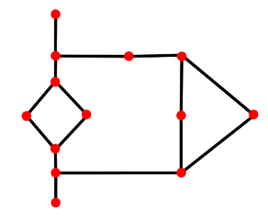

Содержание:
- Главная страница
- Что такое граф?
- Что такое граф? - проверь себя
- Вершины и рёбра графа
- Вершины и рёбра графа - проверь себя
- Изоморфизм графов
- Изоморфизм графов - проверь себя
- Превращаем карту в граф
- Превращаем карту в граф - проверь себя
- Решаем задачи с графами
- Решаем задачи с графами - проверь себя
- Список литературы
Что такое граф?

| Граф - это изображение объектов и связей между ними с помощью точек и линий. |
На рисунках изображены самые разные схемы.
У всех этих схем есть общее - они показывают связи между отдельными элементами. В родословном дереве линия идёт от отца к сыну, схема молекулы показывает, в каком порядке связаны между собой атомы углерода, водорода и кислорода. На схеме метро связи - переходы и перегоны между соседними станциями, а радиосхема показывает, как соединить между собой радиодетали, чтобы получился работающий прибор.
Для изображения и изучения связей между различными объектами - предметами или понятиями - в математике применяется граф. Слово «граф» происходит от латинского слова graphica - «рисование», «черчение».
Часть родословного дерева потомков Николая Бернулли:
 

|
Схема молекулы химического вещества (глицерина):


|
| Схема метро в Новосибирске (по состоянию на ноябрь 2025 г):  |
Радиосхема простейшего радиоприёмника:


|